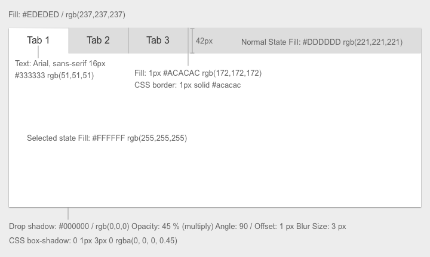
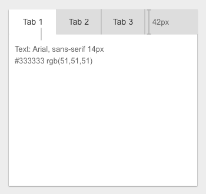

Tabs
Visual Specifications
Small, Medium, Large

XSmall

| Screen size | Padding for left and right of tabs |
|---|---|
| Large | 30px |
| Medium | 30px |
| Small | 20px |
| XS | 20px |
Tab's
<div class="tab-container">
<ul class="nav nav-tabs" role="tablist">
<li role="presentation" class="active"><a href="#home" id="home-tab" role="tab" data-toggle="tab" aria-controls="home" aria-expanded="true">Home</a></li>
<li class="" role="presentation"><a aria-expanded="false" href="#profile" role="tab" id="profile-tab" data-toggle="tab" aria-controls="profile">Section 2</a></li>
<li class="" role="presentation"><a aria-expanded="false" href="#section3" role="tab" id="section3-tab" data-toggle="tab" aria-controls="profile">Section 2</a></li>
<li class="" role="presentation"><a aria-expanded="false" href="#section4" role="tab" id="section4-tab" data-toggle="tab" aria-controls="profile">Section 3</a></li>
</ul>
<div class="tab-content">
<div role="tabpanel" class="tab-pane fade active in" id="home" aria-labelledby="home-tab">
<p>Raw denim you probably haven't heard of them jean shorts Austin. Nesciunt tofu stumptown aliqua, retro synth master cleanse. </p>
</div>
<div role="tabpanel" class="tab-pane fade" id="profile" aria-labelledby="profile-tab">
<p>Food truck fixie locavore, accusamus mcsweeney's marfa nulla single-origin coffee squid. Exercitation +1 labore velit, </p>
</div>
<div role="tabpanel" class="tab-pane fade" id="section3" aria-labelledby="section3-tab">
<p>Etsy mixtape wayfarers, ethical wes anderson tofu before they sold out mcsweeney's organic l</p>
</div>
<div role="tabpanel" class="tab-pane fade" id="section4" aria-labelledby="section4-tab">
<p>Trust fund seitan letterpress, keytar raw denim keffiyeh etsy art party before they sold out master cleanse </p>
</div>
</div>
</div>
Raw denim you probably haven't heard of them jean shorts Austin. Nesciunt tofu stumptown aliqua, retro synth master cleanse. Mustache cliche tempor, williamsburg carles vegan helvetica. Reprehenderit butcher retro keffiyeh dreamcatcher synth. Cosby sweater eu banh mi, qui irure terry richardson ex squid. Aliquip placeat salvia cillum iphone. Seitan aliquip quis cardigan american apparel, butcher voluptate nisi qui.
Food truck fixie locavore, accusamus mcsweeney's marfa nulla single-origin coffee squid. Exercitation +1 labore velit, blog sartorial PBR leggings next level wes anderson artisan four loko farm-to-table craft beer twee. Qui photo booth letterpress, commodo enim craft beer mlkshk aliquip jean shorts ullamco ad vinyl cillum PBR. Homo nostrud organic, assumenda labore aesthetic magna delectus mollit. Keytar helvetica VHS salvia yr, vero magna velit sapiente labore stumptown. Vegan fanny pack odio cillum wes anderson 8-bit, sustainable jean shorts beard ut DIY ethical culpa terry richardson biodiesel. Art party scenester stumptown, tumblr butcher vero sint qui sapiente accusamus tattooed echo park.
Etsy mixtape wayfarers, ethical wes anderson tofu before they sold out mcsweeney's organic lomo retro fanny pack lo-fi farm-to-table readymade. Messenger bag gentrify pitchfork tattooed craft beer, iphone skateboard locavore carles etsy salvia banksy hoodie helvetica. DIY synth PBR banksy irony. Leggings gentrify squid 8-bit cred pitchfork. Williamsburg banh mi whatever gluten-free, carles pitchfork biodiesel fixie etsy retro mlkshk vice blog. Scenester cred you probably haven't heard of them, vinyl craft beer blog stumptown. Pitchfork sustainable tofu synth chambray yr.
Trust fund seitan letterpress, keytar raw denim keffiyeh etsy art party before they sold out master cleanse gluten-free squid scenester freegan cosby sweater. Fanny pack portland seitan DIY, art party locavore wolf cliche high life echo park Austin. Cred vinyl keffiyeh DIY salvia PBR, banh mi before they sold out farm-to-table VHS viral locavore cosby sweater. Lomo wolf viral, mustache readymade thundercats keffiyeh craft beer marfa ethical. Wolf salvia freegan, sartorial keffiyeh echo park vegan.